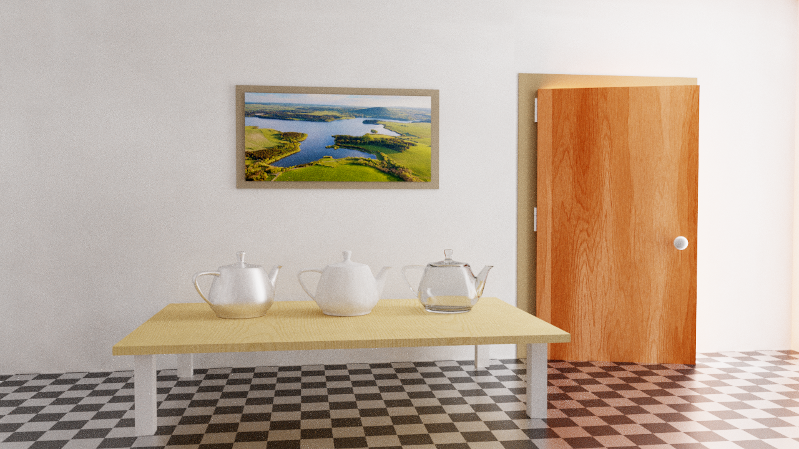

Gliederung
- Intuition
- Algorithmus
- Eigenschaften
- Anwendungen
Intuition
Funktion bekannt
Intuition
Funktion unbekannt
Algorithmus
Gegeben: Funktion $f(x)$, Vorschläge $G(x_{k+1} | x_k)$, Startpunkt $x_0$
1. Ziehe Vorschlag $\quad x' \sim G(x' | x_k)$
2. Akzeptanzwahrscheinlichkeit $\quad \alpha = \frac{f(x')}{f(x_k)} \cdot \underbrace{\frac{G(x' | x_k)}{G(x_k | x')}}_{\text{Hastings Term}}$
3. Entscheide zufällig: $\quad u \sim \mathcal{U}(0,1)$
- $u \leq \alpha: \quad\quad\quad x_{k+1} = x' \quad$ _(Akzeptanz)_
- ansonsten: $ \quad x_{k+1} = x_k \quad$ _(Ablehnung)_
Eigenschaften
- $\\{x_k\\}$ bilden eine *Markovkette*
- Kette "vergisst", nur $x_k$ bestimmt $x_{k+1}$
- stationäre Verteilung $x \sim \pi(x)$
- gewollt: $ \pi(x) \overset{!}{=} \frac{f(x)}{\int f(x)} $
Gleichgewicht
- per Konstruktion $\pi(x) ℙ(x|y) = \pi(y) ℙ(y|x)$
- _detailed balance_, Equilibrium
- Hastings-Term $\frac{G(x' | x_k)}{G(x_k | x')}$ für asymmetrische $G$
- $\overset{SC}{\Longrightarrow}$ $\pi(x)$ ist invariante Verteilung zu ℙ
- aber ist $\pi(x)$ die korrekte Verteilung?
Ergodizität
zeichnen, M drücken
Ergodizität
- Ergodisch = Irreduzibel
- $\pi(x) , \pi(y)>0 \Longrightarrow \exists k<\infty: ℙ(x_k \in dy | x) > 0$
- _"irgendwann von jedem $x$ zu jedem $y$"_
- _"$\pi$ unabhängig von Startzustand"_
Ergodizität
$\Longleftrightarrow$
1. Aperiodizität
- $\nexists k>1:\forall a,b, x_a\rightarrow^* x_b: \quad b-a \mod k = 0$
- $\Longleftarrow$ Selbstübergang + Balance
2. Positive Rekurrenz ($= \neg$ Transienz)
- kehrt beliebig oft in Startzustand zurück
- genau eine Rekurrenzklasse
Wie wählt man G?
- $G(y \\,|\\, x) = G_1(x-y)$
- *Random Walk*
- $y=x+z$ mit "Rauschen" $z$
- z.B. $z\sim\mathcal{N}$
- $G(y \\,|\\, x) = G_2(y)$
- *Independence Chain*
- z.B. Importance Sampling von $f$
Wie wählt man G?
- zu wenig Varianz:
- unwahrscheinliche Gebiete unterrepräsentiert
- Domäne wird langsam durchsucht
- zu hohe Varianz:
- lokale Information wird nicht genutzt
- optimale Akzeptanzraten $\chi$ problemabhängig
Anwendung
Metropolis Light Transport
PSSMLT
- Idee: Pathtracer ist Funktion $L(\vec{\mathbf{x}}, x_c, y_c): [0;1]^n\mapsto ℝ$
- Primary Sample Space: Zufallsvektor $\vec{\mathbf{x}} \in [0;1]^n$
- Farbe an Stelle $x_c, y_c$ ist $\int_{[0;1]^n}L (\vec{\mathbf{x}}, x_c, y_c)\\, d\vec{\mathbf{x}}$
- *Metropolis Sampling* für $\vec{\mathbf{x}}_k$
PSSMLT
nutze seltene, lichttragende Pfade voll aus

$[\text{Bitterli 2016}]$